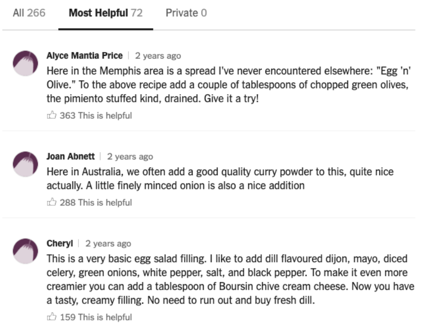
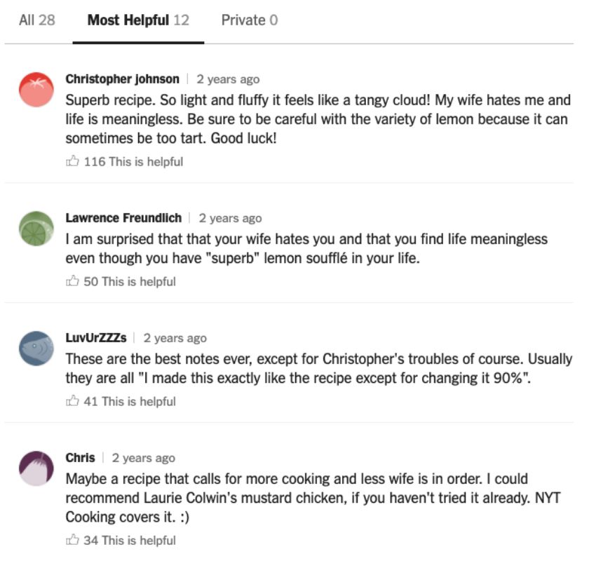
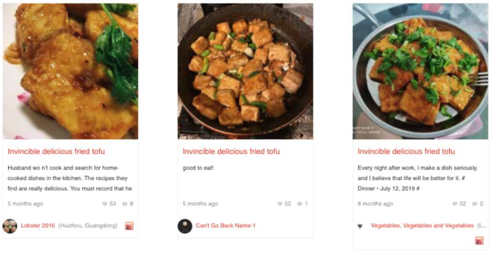
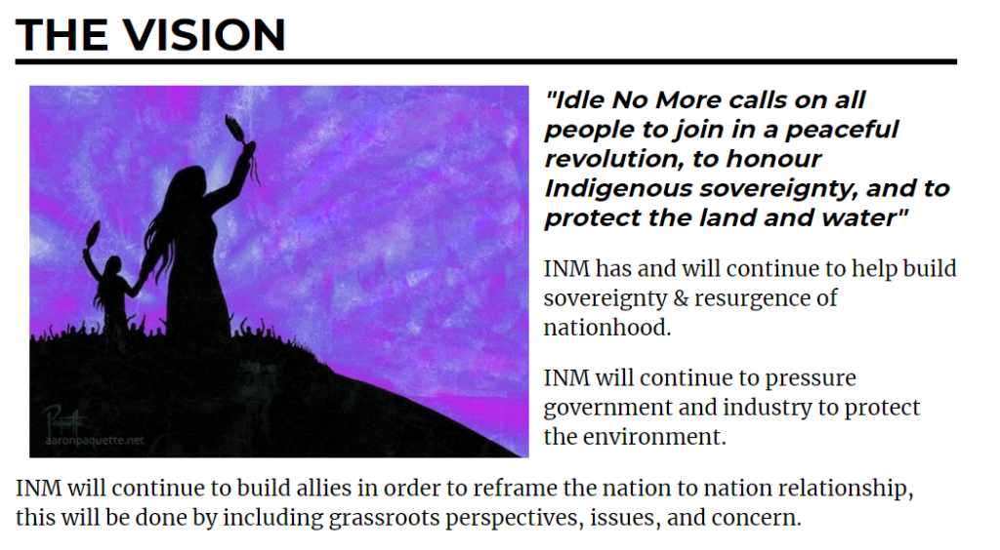
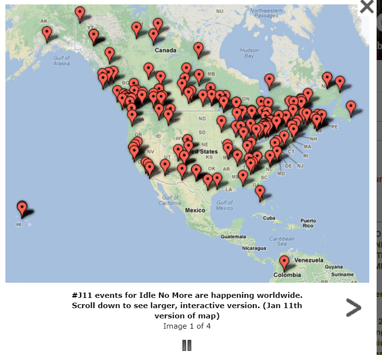
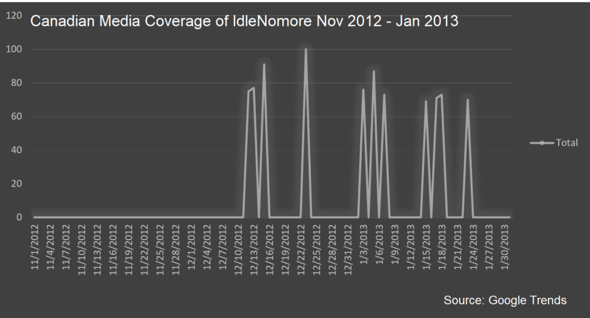
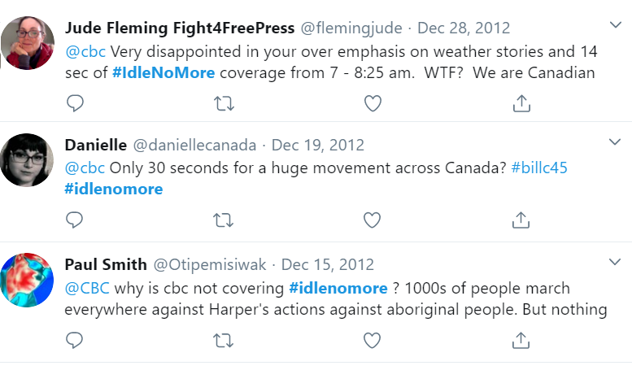
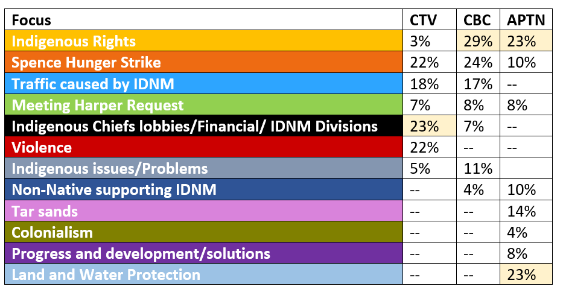
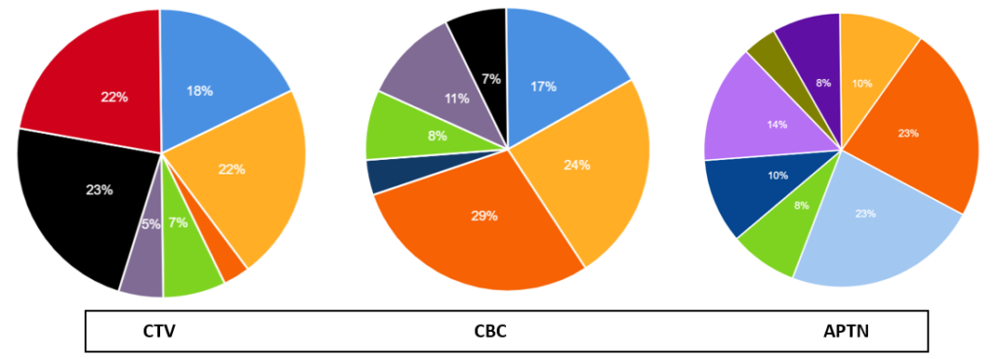
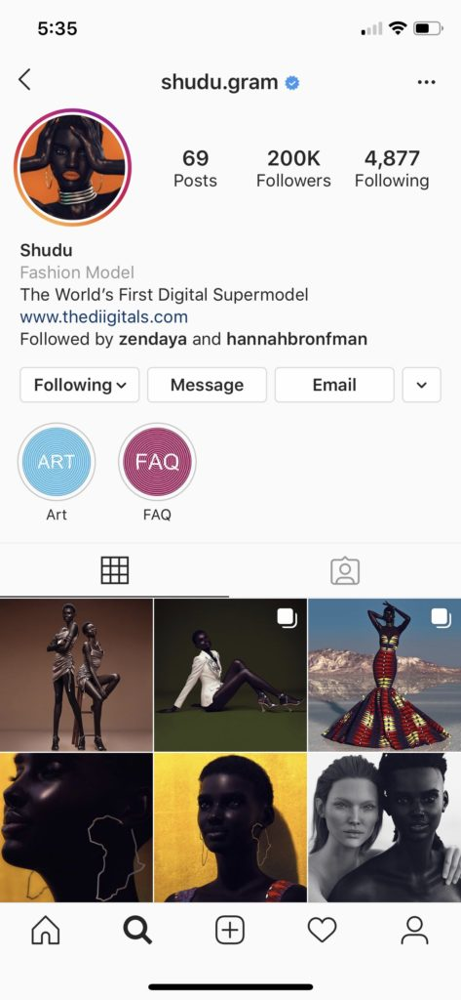

For our breakout session brainstorm, we began thinking about ideas of building community through music during a time of isolation. Specifically, we began thinking about how many of the U.S.’s most popular music festivals – Coachella, Bonnaroo, Hangout, and many others – have been either postponed or outright cancelled this summer due to the coronavirus pandemic. So, we began to brainstorm: How might we create a space for would-be festival goers to “congregate” for a festival atmosphere when so many have been cancelled?
Our wildest idea: Have each festival “attendee” create a separate space in their home for camping – no beds allowed!
Our simplest idea: A festival- or fan-created “dress code” that attendees could follow on a designated weekend – make a festival outfit out of things in your closet!
“They are transmissions sent from isolation, like radio diaries from a stranded spacecraft.”(1)
In a time of global pandemic and extreme social isolation, the messages are not interstellar radio waves. Rather, the transmissions in question are recipes.
Online spaces for cooking are reminiscent of the early days of the internet; when most of online interaction was just about reveling in the simple joy of meeting others who are also interested in whatever topic you are discussing online. As a space for communal gathering and sharing about food, the New York Times (NYT) Cooking website is an exemplary example of a healthy online community. The NYT Cooking website’s comments section is so uniquely wholesome and candid that it even has its own dedicated Instagram (@nytcookingcomments) with 82.7k followers, highlighting hilarious comments that allow viewers to briefly peer into the lives of others through the vehicle of recipes. In the time of COVID-19, cooking has also adapted to become a form of community and resilience; a solace that can only be found online in times when physical interaction is prohibited. Examples of healthy online communities can be found on Chinese social media cooking website, Xiachufang. Even in extreme situations, people are gathering online to show how they are preparing meals at home during the period of mandated quarantine by sharing their recipes and techniques with others.
Keywords: cooking, recipes, New York Times Cooking, COVID-19, healthy communities, social media, quarantine cuisine
Examples from the NYT Cooking Comments section, as posted on Instagram @nytcookingcomments.
Literature Review
The most dreaded place for many corners of the internet is often: the comments section. A brief scroll through many a popular comments-enabled webpage can show the hurtful and crude content that seems inherent to any public post. A healthy online community exemplifies moments for community members to connect in meaningful and constructive ways. Spaces for civil discourse; places where individuals can share, disagree and discuss with civility and mutual respect, feel increasingly difficult to encounter on the internet.
Among adult American internet users, “73% [of users] had seen someone being harassed online, such as by being called offensive names or purposefully embarrassed, and 40% had personally experienced online harassment. Of those who had experienced it directly, 66% reported that the most recent incident had occurred on social media, often Facebook, and 22% said that it had occurred in a website’s comments section. Moreover, such negative online experiences appear to be worsening. According to the most recent Civility in America report, the proportion of Americans who expected further deterioration in civility increased from 39% in 2010 to 56% in 2016 (Weber Shandwick et al., 2017).”(2)
Despite the apparent lack of it in social media, civility in discourse is a crucial part of democratic deliberation and a critical symbol of “a developed democratic society.”(3) A unique case study on a corner of the internet where almost all comments are constructive and dare I say it, funny, can be found in the comments section of the New York Times (NYT) Cooking website. This case study was researched during the rise of COVID-19 in the United States, arriving after causing extensive practices of social distancing in China. A comparative case study between the NYT Cooking community and the phenomenon of “quarantine cuisine” communities on Chinese social media further illustrate the genre of online cooking communities as a unique haven from uncivil community behavior, even during extreme times.
Comparative Case Studies
Case Study 1: New York Times Cooking
One of the website’s most famous comments on NYT Cooking can be found under the recipe for “Katharine Hepburn’s Brownies”:
“This has been my go-to brownie recipe for 30 years, even after going to baking school! I agree that using the best cocoa possible makes a difference. These days, I use Callebaut. In the 80s, an acquaintence in Germany to whom I brought some of the brownies, and who considered herself a great cook, asked for the recipe but was never able to get it to work. She kept asking me what she was doing wrong and I was never able to solve her problem. Eventually, she moved to the US and stole my husband!”(4)
These vignettes of micro-dramas peppered throughout the NYT Cooking comments section are humanizing moments on the internet. The act of cooking is deeply personal and subjective. “A recipe about cookies might conjure up feelings about your upbringing — be them happy, sad, or in between. How you might’ve been taught to make, say, macaroni and cheese (a pretty divisive dish itself, especially when it comes to the best cheese, consistency, and toppings) can affect how you feel about a particular recipe found on the internet as well. Which is perhaps why people tend to get so territorial about certain ingredients or instructions, or get so emotionally invested to the point they feel the need to tell you everything that happened leading up to and after completing a recipe. The nature of cooking is deeply personal and cultural, reflecting our age, gender, where we come from, and a whole host of our identities.” (5)
The affordances that are designed in the interactions available to users provide moments for constructive discourse. According to NYT Food editor Sam Sifton, when NYT Cooking was founded, “we made a conscious decision to call for recipe ‘notes’ instead of ‘comments.’ We know people feel strongly about the recipes we run, and we’re happy to read and share what they have to say, but we want the site to be really and truly useful to readers. We felt that asking for ‘notes’ on recipes would lead to a more collegial and fact-based atmosphere than one filled with mere comment and opinion. That’s worked to a large extent.”
Top comments from under “Eli Zabar’s Egg Salad Sandwich.”.
For instance, under the “Eli Zabar’s Egg Salad Sandwich” recipe (image on the left), Alyce and Jean each contribute their local perspectives from Memphis and Australia, respectively. By framing a comment as a “note,” NYT Cooking invites members to contribute constructive feedback towards achieving a better constructed dish. Members can “upvote” by marking comments as helpful, bringing those comments forward in the “Most Helpful” section which is featured as the default column shown while scrolling through a recipe.
Top comments from under Mark Bittman’s “Lemon Souffle” recipe.
Under Mark Bittman’s “Lemon Souffle” recipe, the top comment comes from Christopher Johnson, who writes “So light and fluffy it feels like a tangy cloud! My wife hates me and life is meaningless. Be sure to be careful with the variety of lemon because it can sometimes be too tart. Good luck!”(8) Comments like Christopher’s and the responses below like these remind us of what makes the internet great. In this forum, we are reminded of “what cooking is all about — perhaps because food is such a visceral, basic, universal need, so tied up in our memories and emotions, from romantic passion to sadness to downright anger. Recipe communities can feel like a safe space in which to vent.”(9) No matter how anxiety-inducing the world around us can be, after a long day, we can always hope to step into our kitchen and make a bit of food that reminds us of somewhere, a childhood memory or a wonderful time shared with friends. By connecting with others online to find ways to find out how to crowdsource the best way to make a meal, we share a common goal and on the internet, find that there really are others that share in this humanity as well.
Case Study 2: Xiachufang
During the rise of COVID-19 in China, 780 million Chinese citizens were cited to have been practicing social distancing and staying home. (10) “Stuck at home because of China’s tough measures to rein in the spread of a coronavirus, millions of people are discovering an unexpected interest in cooking, with restaurants closed nationwide. Downloads of the top five recipe apps more than doubled in February to 2.25 million at China’s app stores, such as Xiachufang, from January’s 1 million, said research firm Sensor Tower.” (11) Zhang Xuesi, a popular chef on the Xiachufang recipe platform describes the rise in popularity of Xiachufang as a place that gives “learners an emotional outlet beyond just aspects of cooking,” whereas in the past, “users were only interested in learning cooking tricks, but now we talk about all kinds of subjects.”(11)
 Google translated comments below the “Invincible Tofu” recipe on Xiachuafang.
Beijing-based journalist and comic book artist Krish Raghav describes Xiachufang as a place where in the absence of being able to meet in real life, “people are posting daily diaries as coping mechanism,” and posting recipes as “diaries as a way of saying ‘I’m surviving, I’m still here.’” (12) A collaborative meeting of people over the internet to share not just recipes, but tips on how to adapt with limited access to ingredients and “overabundance of time” at home.
User Wu Shuang stayed home in Beijing for the month of February, and while learning how to prepare meals at home, “besides watching cooking shows, she reads users’ comments to learn from their mistakes, she said, with the only downside of her experiments being the washing up afterwards.”(11) By meeting online, people are able to deal with social isolation by connecting without the public-health risk of meeting in person. In times of extreme social isolation, the simple pleasure of encountering others online and sharing in their company over the discussion of preparing food is reminiscent of the way digital communities were in the early days on the internet.
Conclusion
A community is defined as “a feeling of fellowship with others, as a result of sharing common attitudes, interests, and goals.” A healthy online community is a digital space for members to share their perspectives and personal narratives towards a welcoming and inclusive community. Online spaces for cooking such as NYT Cooking exemplify characteristics for healthy online communities. Members contribute their “notes” as if striving to collectively create a definitive “best” recipe for a certain dish. In their notes, members also share private moments and memories that are revealing in the deeply personal ritual of cooking. As a comparative case study, recipe website Xiachufang also stands the test of what it means to be a healthy online community, weathering trying times together by sharing stories of food and survival at home during the rise of COVID-19. In a time when civility can seem significantly lacking online, finding an online community convening in the comments section with not just civil but helpful and hilarious comments feels like a beacon of hope for the future of online communities. By gathering and engaging in civil discourse about something as beautiful and simple as an egg salad sandwich, we can perhaps begin to re-learn ways to discuss and engage with others online.
2. Su, Leona Yi-Fan, Michael A Xenos, Kathleen M Rose, Christopher Wirz, Dietram A Scheufele, and Dominique Brossard. “Uncivil and Personal? Comparing Patterns of Incivility in Comments on the Facebook Pages of News Outlets.” New Media & Society 20, no. 10 (October 1, 2018): 3678–99. https://doi.org/10.1177/1461444818757205.
3. Boatright, Robert G., Timothy J. Shaffer, Sarah Sobieraj, Dannagal Goldthwaite Young, Timothy J. Shaffer, Sarah Sobieraj, and Dannagal Goldthwaite Young. A Crisis of Civility? : Political Discourse and Its Discontents. Routledge, 2019. https://doi.org/10.4324/9781351051989.
Images like this were created and spread online by grassroots people to support the movement.
What was #IdleNoMore ?
The #IdleNoMore movement was founded by four women: Nina Wilson a Nakota and Plains Cree from Treaty 4 White Bear, Sylvia McAdam a Cree from Treaty 6 territory, and Jessica Gordon, Pasqua 4 Treaty Territory and Sheelah McLean, a non-Indigenous woman from Saskatchewan.
In the Fall of 2012 they became concerned about proposed federal legislation, specifically a 457-page omnibus bill, officially known as the Jobs and Growth Act, but commonly called Bill-C-45. The bill aimed to alter 74 pieces of existing legislation so that fewer environmental assessments were required of industry, pipelines would be exempted from the navigable waters act, and only fish of commercial importance would be protected under environmental regulations. It also made changes to the Indian Act, so that land could be more easily surrendered for commercial development. In short, it the bill reduced environmental regulations to make way for industry, particularity oil and gas pipelines.
#IDNM used social media to educate, communicate and organize.
The #IdlenoMore (#IDNM) founders, believed the Harper government had purposely designed C-45 to be long, complex, and difficult to communicate to public. They were not alone. Opposition parties and the media had similar criticisms. Prime Minister Stephen Harper, and his conservative government held a majority at the time, meaning the Bill could pass even if very member of the opposition parties voted against it. Only public pressure on the Conservative party itself could stop the Bill.
“We were discovering things that were very concerning to us. Things that are hard to understand, very bulky. Very dense. I got a headache actually reading that Bill,” Nina Wilson said.
“Without land we’re not a nation. Without land we have no culture,” Sylvia McAdam explained.
How did IDNM’s understand its own success as a community?

On its “official” website which posted and tracked events and news in 2012-2013 #IDNM stated its vision. It was to be a peaceful movement, it was concerned with ensuring Indigenous people sovereignty to protect land and water was recognized.
If #IDNM’s goals could be summarized, into a list, it might look like this:
Stopping Bill C-45 and creating a large and peaceful ‘revolution’ that would recognize Indigenous sovereignty.
Communicate discontent with Canada’s environmental policies, and Indigenous authority to protect land and water
Raising consciousness among Indigenous people
‘Flexing’
While #IDNM did not have achieve all of its goals, it was successful in organizing a real life social movement through social media.
Stopping Bill C-45 and creating a large and peaceful ‘revolution’ that would recognize Indigenous sovereignty.
The four founders began holding “teach-ins” on Nov 10. They set up a Facebook page to communicate and stream the teach-ins. Jessica Gordon says she needed to put in a name and typed in Idle No More “Because I’m not sitting here anymore… I’m not waiting.”
Bill C-45 was a spark, and immediate issue, which Indigenous people could rally around. However, underlying the Bill was the long-standing issue of consultation and consent when development is planned on Indigenous lands. In Canada large swatches of lands are protected by Treaties, other lands were never lost or surrendered. Canadian courts have occasionally blocked development when either industry or government has failed to consult Indigenous people and take their concerns to account. Courts have fallen short of Indigenous laws, which give Indigenous peoples a veto over development. Bill C-45 was understood to be an erosion of rights.
Among the early joiners of #IDNM were the Indigenous intelligentsia, those schooled in both Indigenous teachings by their communities and western knowledge through universities. among them Hayden King Anishinaabe from Beausoleil First Nation. he acknowledges underlying the legislation was a long-standing frustration with the Harper Conservatives, who had been in government since 2006, with a majority government since 2008.
“It was a decade of bad relationships with government. There was a mood,” he said.
Education about Bill C-45 remained a feature of the movement and social media was seen as a key to explain the threats to sovereignty and the environment of particular concern to Indigenous people, which was not being covered by media. So, for example on December 2, there was also a teach -in held on the blood reserve by four Indigenous female lawyers, streamed live on Youtube.
Although social media was originally seen as a tool for education, it soon became a tool for mobilization, according to journalist Rick Harp who followed the movement closely.
In Winnipeg, Wilson had tried previously to organize a rally about Bill-45 by door-knocking in Winnipeg. For the first one only a dozen people turned out. By December 10, buzz about #IDNM on social increased the interest and about 200 people came for a rally in the espite the cold Canadian winter.
“I’m really happy. I’m really proud of our people. I was overwhelmed earlier because just to see that many people coming together for something we all want, and want to work through. It was overwhelming and it was awesome,” Wilson later told APTN news.
Until December 4, the movement had been almost entirely organized by grassroots people. But that day a half dozen Chiefs who were in a meeting in Ottawa attempting to push their way into House of Commons, carrying a wampum belt.
Then on December 11, Chief Theresa Spence of the Attawapiskat First Nation in northern Ontario, set up a camp on Victoria island, in Ottawa a stone’s throw from Parliament hill, and began a hunger strike. Her demands to end the strike included a meeting between chiefs, and the Prime Minister and governor general.
The movement outlasted Bill C-45 which was passed without amendments on December 14, by the Conservative government who held a majority int the House of Commons. Instead of stopping, #IDNM grew.
Over the next weeks dozens of #IDNM rallies, marches and round dance flash mobs took place across Canada bringing out hundreds of people.
Media was paying little attention to IDNM for the first month. Indigenous people made and shared their own videos while exerting pressure on mainstream media to recognize and report on the movement, like this flash mob in Saskatoon.
Unlike other Indigenous protests that tend to take place remotely, in one location on the site of development, these protests were urban, occurred quickly and seemingly randomly.
Little of this ensuing activity was coordinated by the four founders. IdleNoMore had no leader. It was a grassroots movement where any single person could spark a large action with a tweet or a Facebook post. It stunned government and became an issue of concern for the RCMP, even though they never became violent.
Typically, word of a planned event would be posted and spread on Facebook a day or two in advance, and spread through existing social networks. It would be amplifies on Twitter. The people now operating official and non-official #IDNM websites, Twitter, and Facebook accounts aggregated and amplified the posts.
According to the Globe and Mail the hashtag #IdleNoMore grew and would receive more than 144,000 tweets over Christmas Holidays (Dec 24-31) and 12,000 Facebook mentions.
December also started to see road blocks and disruptions to trains. There is no complete record of events, but a sampling from news coverage includes:
Four highway blockades in Alberta included: Hobbema, Driftpile, Blood Tribe territory and Frog Lake First Nation.
A blockade of the Trans-Canada Highway, Portage La Prairie, Manitoba
Three Ontario blockades included: a shutdown of Highway 401 near London, a block of Highway 6 north of Manitoulin Island and a blockade of a rail line at a chemical factory near Sarnia.
In Quebec highway 132 was shut down and a slowdown took place at Pointe-À-La-Croix, Quebec.
A traffic slowdown took place at Campbellton, New Brunswick
Two traffic slow-downs took place in Nova Scotia, with land protectors handing out information on Bill C-45
The founders were less sure about the road blocks.
“Excited and scared at the same time,” is how Nina Wilson described her feelings. “I worry for my people, I don’t want them to be incarcerated, I don’t want them to be in trouble, their kids left at home because they have to be in jail or in court. My mind was racing crazy.”
However no one controlled the movement. The founders had no authority, nor had they asked for any. While the movement was pan-Indigenous in the sense that it crossed all nations, each nation has its own organizing structure and grassroots connections. These took over the movement, spreading it, and giving local people the power to shape their actions as they wished.
Members of the #IdleNomore movement say the absence of an appointed leader or rule by committee was a more traditional form of Indigenous community organizing.
“In some ways I think that Idle No more reflected Indigenous notions of governance becaue there was no vocal individual you could go to” says Hayden King.
“From an Indigenous perspective it wasn’t leaderless; it is never leaderless. it was that power and leadership were dispersed and were being shared by a lot of people, ” says Tara Williamson a writer and educator who was part of the movement.
The messaging about dissatisfaction with federal laws governing the environment without consultation remained consistent. A key message was that Indigenous peoples have rights to govern traditional and unceded lands, whether by treaty, constitution or traditional law pre-dating Canada.
“Our community was already feeling a sense of angst, maybe, a sense of frustration,” says Tanya Kappo. She believes the atmosphere was ripe for an expression of discontent.
Social media spread word of the movement beyond Canada’s borders so that sympathy protests were held by Indigenous peoples in the US, Australia, New Zealand and other countries.
The events map from the Idle No More site has been taken down. This map by Media Scoop showed events planned for January 11 2013, at the peak of the movement.
A large protest took place in Ottawa on January 11, 2013. Subsequently then Prime Minister Harper agreed to meet with Chiefs.
Scenes from various #IDNM movements from a short video By CBC
Prime Minister Harper agreed to meet with Chiefs. Only some of the chiefs agreed to meet, as the governor general was not present. Others did not feel a meeting with the Prime Minister was the point of the movement.
Chief Spence ended her hunger strike January 24, 2013.
The movement fizzled after January 2013, but didn’t disappear. The round dances had stopped but teach-ins continued. Social media connections had been made.
Subsequently conversations among Indigenous people questioned if the movement had accomplished anything.
Communicate discontent with Canada’s environmental policies, and Indigenous authority to protect land and water
Early on #IDNM bwas ignored by mainstream media, much like an earlier movement Occupy Wall Street was originally ignored by media in the US.
“The early days, those first few weeks it was difficult to get anyone’s attention,” says King.
A search of Google Trends shows that serious coverage of IdleNomore only began after December 10, weeks after the demonstrations began.
At the time #IDNM launched they found themselves in competition for media attention with a story about the “IKEA Monkey.”
APTN reporter asks why mainstream media missed a massive protest and covered a monkey instead. Originally aired Dec 12, 2012
Part of the #IDNM movement became pressuring mainstream media to pay attention. They focused on the public broadcaster, CBC.

CBC personalities like The National anchor Peter Mansbridge received a barrage of pushback on social media, some polite, some mocking and disparaging.
As seen above CBC National did not run a story until December 20, 2012, far into the protests and 9 days after Chief Spence began her hunger strike.
Professor Anna Mongibello, University of Naples, performed a content analysis of media in 2012 in her book Indigenous Peoples in CanadianNews.She captured the coverage of #IDNM by three national news sources: APTN, the Indigenous broadcaster; CBC the public broadcaster and CTV a private broadcaster.
 Her analysis shows how differently media outlets shaped their coverage of #IDNM.  The pie charts above below are from Mongibello’s study except the colors have been altered for legibility.
To APTN #IDNM was an Indigenous rights movement, with 23% percent of its coverage focused on that topic. APTN was the only media to define #IDNM as a movement about land and water protection (23%); and was the only media to mention tar sands (14%), progress and solutions (8%), or colonialism (4%).
To CBC the movement was primarily about Aboriginal Rights (29%), although this remained undefined, and a hunger strike (24%), which blocked traffic.
CTV the private broadcaster, but the highest rated of the three, was an outlier. The majority of its coverage focused on divisions in the movement (23%), and violence (22%); Neither APTN nor CBC understood the movement to be violent. CTV also focused slight more on traffic caused by #IDNM (18%) than CBC (17%); this topic was absent from APTN.
While it is not media’s job to be a spokesperson for a movement; media should be able to present the public an accurate idea of why #IDNM was happening. APTN coverage was closer to representing #IdleNoMore’s view of itself, and CBC was somewhere in the middle. It unlikely that viewers of CTV could have understood why #IDNM was happening. To Mongibello CTV’s focus on alleged violence and internal conflict served to undermine the legitimacy of the movement.
#IDNM was successful in pushing mainstream media to cover their issues, although it was not a portrayal that always accurately reflected the movement.
It was important then, if #IDNM was to be able to speak over mainstream media’s representation of it, and to communicate its message to Canadians that it post its own media, which it did in abundance on YouTube, Twitter and Facebook. It is unknowable if the efforts bore fruit. However, the knowledge, and effort of #IDNM to take control of its message can be considered a success in terms of social cohesion for the group.
Raising consciousness among Indigenous people
Organizers of #IDNM even years after the peak of the movement say that while there may not be dozens of weekly rallies, the movement has a lasting effect on Indigenous people.
“I think another significant change was the consciousness among Indigenous peoples was raised. I think that for the first time a lot of Indigenous peoples started contextualizing their own circumstances, started to understand why they were in the situation they were in,” says Hayden King.
“If nothing changes in terms of the government, and what they are doing we’ll always have to show resistance I feel that’s a real tragedy for Canada because instead of having the time and the opportunity to build ourselves and build our communities we’re always having to struggle and resist. On the other hand, that is what is building us into strong nations,” says Sylvia McAdam.
“Pride is the biggest thing, I see pride in in our youth especially and within our own grassroots people organizing and respecting each other and realizing there is much more we can do. We don’t have to rely on chiefs. We don’t have to rely on government. Our own organizing and that nation-hood building on the ground is important,” says Nina Wilson.
‘Flexing’
Nor has the #IDNM truly ended, it just changes form.
“What we are today is no longer Idle No More, but Idle No More lives in new movements,” says Hayden King. ” For me, and I’ve been involved in Indigenous activism for more than a decade now, I think of things as pre and post Idle No More. There was how we did politics before Idle No more and how we did politics after Idle No More and they are quite different.”
People involved in the movement were also certain that under the right circumstances the movement could arise again.
Although there have been other conflicts it was in January 2020 when a movement like #IDNM rose again.
January 2020 as sympathy protests were organized in support of a group of traditional chiefs of the Wet’suwet’en First Nation located in British Columbia.
The issue involves a long-standing dispute over whether or not the government has consent to built the Costal Gaslink pipeline through the unceded lands of the Wet’suwet’en protesters and their supporters were arrested along this road in early February, sparking solidarity protests and blockades across Canada.
While one hereditary chief supported the pipeline as did a number of elected chiefs, the traditional chiefs laid claim over a large swatch of traditional territory.
Wet’suwet’en who oppose the pipeline and their supporters were arrested along this road in early February, sparking solidarity protests and blockades across Canada.
Video of arrest of Chief Spookw, Wet’suwet’en people and supporters who oppose the construction of the pipeline on their territory.The blocked the highway after his arrest, asking the chief be freed. Video by Melissa Cos, journalist for Media Co-op. Cox was also subsequently arrested and detained. She has yet to be charged with anything.
One change was information in advance of actions was relayed by phone through small groups of volunteers instead of social media posts. Perhaps because of growing concern about police monitoring of Indigenous people. In the year following #IDNM it was revealed that police had scoured social media post and made a list of potential ‘radicals’ from participants in #IDNM.
The #IDNM hashtag resurfaced as marches and rallies took place. Along side however was the rise of a new hashtage and message: #ShutdownCanada which advocated for and achieved long term blockages of railway lines and other infrastructure.
The goal was to force the federal government, now a liberal minority government led by Prime Minister Justin Trudeau to negotiate with the hereditary chiefs of Wet’suwet’en. Trudeau eventually agreed to do so, and an agreement is under negotiation.
Arrest of Mohawks who blocked a rail line in sympathy with Wet’suwet’en hereditary chiefs. Footage by Real Peoples Media.
However unlike #IDNM where the mood was somewhat optimistic, it did seem the new movement — and backlash against it – was more bitter, as mainstream media and social media became a battle ground debating Indigenous rights, and an outlet for frustration and in some cases racism.
“You do everything you can until you get to the point where you have to be active in a direct action… Until then we are completely invisible. Our issues aren’t covered, they aren’t considered important. Once we get to that point we get demonized, we get shown as violent and angry — like we are not willing to deal with things in a civilized way,” says Williamson.
Miquela Sousa (@lilmiquela), Shudu (@shudu.gram), and Audy Bleu (@audy.bleu) are social media bots, but not the kind made by the thousands to bestow large quantities of likes on divisive posts. They are carefully crafted CGI characters, two of whom were assumed to be human before their creators opened up about their origin. They are most active on Instagram, although Miquela also releases music available on Spotify. They are also influencers. As of this writing, Miquela has 2 million Instagram followers and over 300,000 monthly listeners on Spotify, Shudu has 200,000 Instagram followers, and Audy Bleu has 200 Instagram followers. In addition to producing content, they are socially interactive, responding to comments and on occasion doing “interviews” with journalists. Virtual influencers are more than just pretty pictures; they are part of the social fabric of the web. How does this affect the health of our online communities? Can virtual influencers be valuable community members, or are they destroying something uniquely human? I argue that bots can contribute to a healthy community when they are honest about their non-human status, fall closer to artistic statements than capitalist emissaries, thoughtfully engage with human identity markers such as race and identity, and encourage discussion between human community members.

In this article I draw on an investigation of the Instagram accounts of virtual influencers including Miquela, Shudu, and Audy Bleu as well as the ones listed in the table below. I review their posts, comments below posts, and followers. I also do a discourse analysis of numerous online articles about the influencers and their creators (see References section).
Name
Instagram
Followers
Creator
Country
Year
Miquela Sousa
@lilmiquela
2 million
Brud
USA
2016
Bermuda
@bermudaisbae
221,000
Brud
USA
2016
Blawko
@blawko22
158,000
Brud
USA
2018
Shudu
@shudu.gram
200,000
Cameron James-Wilson (now The Diigitals)
UK
2017
Audy Bleu
@audy.bleu
200
Martell (alcohol brand)
Singapore
2019
War Nymph
@warnymph
73,800
Grimes (musician)
USA
2020
Hatsune Miku
@mikuhatsune
82,200
Crypton Future Media
Japan
2007
Colonel Sanders
@kfc
1.6 million
Kentucky Fried Chicken
USA
2019
Friends and colleagues often display mild disgust towards the idea of following a bot on social media. I will argue here that virtual community members are not in and of themselves problematic, but they are problematic when masquerading as an actual human. As one reporter remarked, “Shudu is notable for being post-uncanny valley, appearing so human that most people, even with a closer look, wouldn’t suspect that she’s CGI.” (“Shudu, the First Digital Supermodel” 2018) The creators of both Shudu and Miquela initially hid their origins. One of Shudu’s early images, in which she is wearing Rhianna’s beauty brand Fenty, went viral and threw the fashion world into a frenzy trying to uncover her identity. Slowly, Shudu’s creator Cameron James-Wilson came forward saying that it was an art project (“Shudu, the First Digital Supermodel” 2018). He faced both enthusiasm and backlash, much of it centered around whether a white British man should be allowed to create an African digital model (“Photographer Gets Accused Of Racism” 2018).
Brud,
the company behind Miquela, Bermuda, and Blawko, went a step further. They released
both Miquela and Bermuda in 2016 without any explanation or link to Brud. Miquela,
the 19-year-old musician, became particularly popular and garnered hundreds of
thousands of followers who presumably believed she represented a human. In
April 2018, Brud staged a faux online drama in which Bermuda “took over”
Miquela’s account and deleted all her photos, saying that she needed to tell
the world the truth. After fanning the internet flames, Brud stepped forward as
the creator of both Miquela and Bermuda, and people realized the entire episode
had been a carefully curated scam to generate attention (Petrarca 2018). The
internet community was angry, but Miquela has continued to gather followers and
has over 2 million to date.
Both
Shudu and Miquela’s introduction to the world upset their online community.
People felt betrayed and lied to. Now that their identities are out in the
open, people are able to reconnect as they see fit. It allows for the honest
evaluation of a relationship with a robot instead of one founded on deceit. In
a world where Facebook deactivates Native American’s accounts because their
names don’t sound “real” and refuses to let humans choose their own gender
identity (Haimson & Hoffmann 2016), it feels ironic that virtual avatars
can now masquerade as real humans on social media platforms. While they may be
valuable contributors in their own ways, they clearly shouldn’t be equated with
human communication partners.
In
addition to being honest about their human-ness, virtual community members,
like human influencers, should be open about their commercial and brand affiliations.
Lifelike bots fall on a spectrum between serving artistic needs and serving
capitalist needs. It matters for the health of the community which end of the
spectrum a bot falls on, and how honest they are about their purpose. Bots such
as Colonel Sanders, who the internet described as Kentucky Fried Chicken’s “hot”
logo, and Audy Bleu, who represents the alcohol company Martell, both embody a
brand. Kentucky Fried Chicken was completely open about Colonel Sanders and
promoted him via their Twitter and Instagram pages (Wright 2019). Audy Bleu’s
Instagram profile is more covert but reads “Friend of #Martell” and includes a
link to Martell’s website. Cameron James-Wilson claims, on the other hand, that
Shudu is an art project. Shudu does occasionally partner with brands, but this
is always very clear in the post comments and James-Wilson says in an interview
from 2018, “I don’t really see Shudu as a money spinner or a business for me. It’s
more of an expression, and when I’ve had companies approach me, if what they
want doesn’t reflect in what I see for her then it’s a no go. You know it
doesn’t matter about the money or things like that. Because it’s not why I
started Shudu. I started her for me, to express myself.” (“Shudu, the First
Digital Supermodel” 2018)
What lies in between
openly embodied brands and art is murkier, and I argue, more problematic. Human
influencers already face this issue to some extent: how to be authentic while
taking money from brands to promote certain products. Virtual influencers face
the same problem, but it is messier when the influencer is not actually
represented by a single human being. Brud’s Miquela, Bermuda, and Blawko
clearly fall into this category. Brud’s website claims that it is “a transmedia
studio that creates digital character driven story worlds” (“💖
website_copy_wip_for_all_my_qtz 💖” n.d.). However,
it has recently raised $20 to $30 million from venture capital firms, and the
business model seems to be advertising (Shieber 2019). Miquela has already
posted pictures promoting brands like Calvin Klein and Prada. I argue that while
similar to a human influencer, this is more problematic for digital
influencers. At the end of the day, a human influencer has some degree of
agency. This may be limited due to financial constraints, brand pressure, or
other factors but it doesn’t disappear completely. If a human feels like something
is truly wrong and has a platform with millions of followers, they have the
capacity to speak out. A virtual avatar does not. Virtual influencers can be
bent in any way a brand desires without putting up a fight. It is for this
reason that virtual community members like Miquela who claim to be art but
function as capitalist mouthpieces are highly unhealthy for online communities.
Openly embodied brands do not hold great potential for helping a community, but
they are less damaging than covert marketing machines. On the flip side, virtual
community members who strongly limit advertising or steer clear of it entirely and
are honest about their non-personhood can be intriguing and fun, in the way
fantasy characters have been in novels and stories for far longer than the
internet has existed.
Like
story characters before them, social media bots must also contend with issues
of human identity, such as race and gender. While many robots, like Amazon Alexa
and Google Home, are notorious for evading questions of race and gender, virtual
influencers must engage with these to some degree because of their hyper-realistic
imagery. Miquela says she is half-Brazilian, half-Spanish (Boshier 2020).
Bermuda is Caucasian and blonde. Shudu’s creator cites Princess of South Africa
Barbie as his inspiration for the dark-skinned supermodel (B 2019). Audy Bleu has
been dubbed Singapore’s first virtual influencer (Thiyagarajan 2020). Hatsune
Miku is Japanese (Wikipedia). They are all women. The only male virtual
influencers I came across were Blawko, made by Brud, and Colonel Sanders of KFC.
Blawko always wears a mask obscuring the lower half of his face. Colonel
Sanders is Caucasian.
It
matters how virtual character’s identity is designed and displayed since this
can either foster an inclusive community or hurt particular groups of real humans.
Digital assistant’s front of “neutrality” (despite obvious predilections
towards white, female identities) seems to stem from the idea that an “unraced”
technology will fit into everyone’s homes. Virtual influencers take a decidedly
different approach, recognizing that online communities reflect distinct
cultures, in which race and gender are a factor. Using identities to celebrate
diversity can lift up communities, but using identities, particularly
marginalized identities, to sell products is harmful. In one of Miquela’s
Instagram posts, she says “I’m not sure I can comfortably identify as a woman
of color. ‘Brown’ was a choice made by a corporation. ‘Woman’ was an option on
a computer screen. My identity was a choice Brud made in order to sell me to
brands, to appear ‘woke.’ I will never forgive them. I don’t know if I will
ever forgive myself. There it is for the digital universe to feast upon: an
unabashed staging of diversity without the actual presence of people of color.”
This post is surprisingly self-critical and shows Brud grappling publicly with
Miquela’s identity. It is perhaps a form of apology to the outraged internet
over their lies about her origin. Despite the soul searching, though, Brud continues
to use Miquela as a marketing tool. As Rosa Boshier writes for Bitch Media:
In “Feeling Ancestral,” an essay that appears in the 2015 anthology Racial Feelings: Asian America in a Capitalist Culture of Emotion, Santa Ana writes that “the commodification of racial mixture allows us to feel the euphoria of consuming social change while simultaneously forgetting our melancholic past.” Miquela’s easily digestible version of mestizaje offers a glimpse into an alternative universe where implication and culpability don’t exist, erasing any trace of colonial violence and historical oppression. As a simulated influencer with an ever-growing following and brands behind her, ready to pay for access to a relatable, oppressed queer young woman of color without having to actually work with queer women of color, Miquela espouses vague messages about equality while simultaneously commodifying social progress for capital gain. Miquela represents only one example of how we have given ourselves permission to give up. (Boshier 2020)
Brud also makes Bermuda, a highly
sexualized Caucasian woman who supports Trump. It seems clear that one company
cannot authentically hold two such opposing viewpoints; the only reason to do
so is to engage different marketing demographics for material gain.
Shudu,
on the other hand, while engendering some upset over the fact that she was
produced by a white man (“Photographer Gets Accused Of Racism” 2018), has, I
argue, contributed positively to discussions about diversity in fashion.
Cameron James-Wilson says in an interview, “Just the same as in many industries,
the 3D world is sorely lacking ethnic diversity and black characters and assets
are particularly rare. There’s a push to shift this, and with the advancement
of tech and 3D industries, we can expect a change. But it’s one thing that
Shudu is contributing to in her own way. It wasn’t something intentional from
the start, but now I’m very interested in helping to create the resources
needed for game developers and 3D designers to make more diverse characters.” (“Shudu,
the First Digital Supermodel” 2018) In Shudu’s most recent Instagram post, she
is seen with real-life model Alexandra-Maleek who looks like her twin. Shudu
also wears clothing and jewelry by Black designers and links to their Instagram
pages. In doing so, Shudu is able to highlight human talent that may be
otherwise marginalized in the fashion world.
This
brings me to my last point, which is that in order for virtual influencers to
contribute to healthy communities, they should engage in healthy communication
with humans. One disturbing trend I noticed, primarily on Miquela’s posts, was
the number of conversations between bots. Constructive community is built
through human-human communication, which bots can facilitate but not replace. As
noted above, Shudu links to real models and designers, bringing them into
conversation with each other. When Bermuda and Miquela exchange a string of
comments, it may be briefly entertaining, but it is not substantive. Hatsune
Miku, a Japanese virtual singer originally released in 2007, almost a decade
before the US-based bots, has constructed a vibrant community around her
persona. Hatsune Miku holds physical concerts around the world using a
projection of her avatar, but she does not play her own music. Instead, she
performs thousands of songs written by fans using software that mimics her
voice. Hatsune Miku’s fans share songs and fan art with each other, often riffing
off each other’s work. Hatsune Miku gathers people and provides a starting
point for connection (Wikipedia). It is important that humans connect through
robots, and that robots do not simply create a world for themselves.
This is the comment section of Miquela’s post. @lilmiquela, @bermudaisbae and @audy.bleu are all bots.
The diversity of virtual influencers shows us that they cannot be cast off as all good or all bad. The implementation matters. If done well, virtual influencers can be valuable members of a community. In this scenario, they are honest about their non-human status, tend towards art over advertising, handle their adopted identity with grace, and facilitate connection between humans. If done poorly, they can cause upset and feelings of betrayal as well as actual harm to marginalized communities. In the worst case, they profit off of the bodies of people who have historically been oppressed and facilitate bot-bot conversations as a way to gain followers. I am hopeful we can push for a world that includes wonderful, interactive robots who delight and connect us and that don’t exist to sell us products.
References
💖
website_copy_wip_for_all_my_qtz 💖. (n.d.). Brud.
Retrieved March 29, 2020, from https://docs.google.com/document/d/1V5N5tcfm7wBuUshgrmIOz9ijAO-VRqvkUbGRu0uKdI8/edit?usp=embed_facebook
B, S. (2019,
December 28). 5 Cool CGI Influencers You Should Follow on Instagram. Beebom.
https://beebom.com/cool-cgi-influencers-instagram/
Boshier, R.
(2020, January 28). Lil Miquela Is a
Queer Woman of Color. Too Bad She Isn’t Real.Bitch Media. https://www.bitchmedia.org/article/who-is-lil-miquela-racial-implications-of-simulated-influencers-of-color
Gorsler, F.
(2018, February 5). Meet Fashion’s
First Virtual Instagram Influencer: Lil Miquela. High Snobiety. https://www.highsnobiety.com/p/lil-miquela-virtual-influencer-instagram/
Hatsune Miku.
(2020). In Wikipedia. https://en.wikipedia.org/w/index.php?title=Hatsune_Miku&oldid=947415485
Hiatt, B.,
& Hiatt, B. (2020, March 5). Grimes: Live From the Future. Rolling Stone.
https://www.rollingstone.com/music/music-features/grimes-rolling-stone-digital-cover-960843/
Hidrėlėy.
(2018). Photographer Gets Accused Of Racism After His Perfect Black Model
‘Shudu’ Gets Instagram Famous. Bored Panda. https://www.boredpanda.com/3d-black-model-shudu-cameron-james-wilson/
Holmes, E.
(2018, July 2). Do Avatars Make the
Perfect Influencers? ELLE. https://www.elle.com/culture/a21272102/almost-human-july-2018-miquela-shudu-profile/
Katz, M.
(2018, May 1). CGI ‘Influencers’ Like Lil Miquela Are About to Flood Your
Feeds. Wired. https://www.wired.com/story/lil-miquela-digital-humans/
Lil Miquela.
(2020). In Wikipedia. https://en.wikipedia.org/w/index.php?title=Lil_Miquela&oldid=947002032
Morency, C.
(2018, February 5). Meet Fashion’s
First Computer-Generated Influencer. Business
of Fashion. https://www.businessoffashion.com/articles/intelligence/meeting-fashions-first-computer-generated-influencer-lil-miquela-sousa
Petrarca, E.
(2018, April 18). A Pro-Trump Troll
Hacked Instagram’s Favorite Virtual Influencer. The Cut. https://www.thecut.com/2018/04/lil-miquela-hack-instagram.html
Princess
of South Africa Barbie Doll. (n.d.). Retrieved March 29, 2020, from https://barbie.mattel.com/shop/en-us/ba/barbie-dolls-of-the-world/princess-of-south-africa-barbie-doll-56218
Remsen, N.
(2016, May 2). Riccardo Tisci Gives
Japan’s Biggest Virtual Virtuoso an Haute Couture Makeover. Vogue. https://www.vogue.com/article/riccardo-tisci-hatsune-miku-haute-couture-makeover-avatar
Shieber, J.
(2019, January 14). More investors are betting on virtual influencers like Lil
Miquela. TechCrunch. http://social.techcrunch.com/2019/01/14/more-investors-are-betting-on-virtual-influencers-like-lil-miquela/
Shudu, the
First Digital Supermodel: What You Need to Know. (2018, March 5).
Highsnobiety. https://www.highsnobiety.com/p/shudu-digital-supermodel/
Soul
Machines—Changing the Face of AI. (n.d.). Soul Machines. Retrieved March
28, 2020, from https://www.soulmachines.com/
Thiyagarajan,
D. (2020, February 10). Inside The Mind Of Singapore’s First Virtual
Influencer, Audy Bleu. RICE. https://www.ricemedia.co/culture-people-singapore-first-virtual-influencer-audy-bleu/
Wright, M.
(2019, April 13). KFC unveils hot CGI
“virtual influencer” as their new Colonel Sanders. Mail Online. https://www.dailymail.co.uk/news/article-6918277/KFC-unveils-hot-virtual-influencer-Colonel-Sanders-recipe-tattoo-chiseled-ab.html
“Xiachufang” is an
entry in to Chinese home cuisine on the internet. It is a mobile application
that provides the purchase of ingredients, kitchen supplies, and the query and
most importantly, sharing of recipes. The online recipe sharing community was a
relatively new concept when the idea was introduced. But as of August 2016,
there are more than 600,000 original recipe contents, and 20 million gourmet
works have been uploaded to this online platform.
Among them, the
iPhone version of “Xiachufang” was selected as the App Store application and
was selected as a demonstration app by the Apple Store offline experience store
and was selected as the App Store’s best 2013 gourmet app in China.
After launching
the marketplace business at the end of 2014, it has become a food e-commerce
platform for suppliers and consumers who value quality; in the field of kitchen
appliances, it has revealed its dominant position, and has established
strategic cooperation with brands such as Panasonic covering sales and brand
promotion. The selling of personalized quality foods and ingredients highlights
the vision and tonality of the kitchen selection. Many long-tail products have
become popular models through the push of the application. In addition to
product brands, many channel brands and e-commerce platforms have also become
suppliers of “Xiachufang”, such as Yiguo in the fresh produce sector, spring
sowing, and Sam’s member stores in the imported food sector, highlighting the
entry status of “Xiachufang”.
The kitchen UGC
gourmet content and KOL cultivated by a large number of platforms can provide
value-added services for cooperative products, provide more help for consumers’
purchase decisions, and the combination of media and e-commerce is an advantage
that traditional e-commerce does not have. Because of the advantages of users,
the kitchen can focus on the platform building and online user experience in an
asset-light manner, while leaving the storage, logistics, and packaging to the
supplier.
The Community:
Gender:
More than 70% are female users. From a cultural perspective, it is not
surprising to me that there are still more women who are cooking in China. Even
though the Chinese modern household do not hold the same values of the older
generation, there are still societal expectations that have prejudices of women
cooking in the household. So, the design of the app are targeted more towards
the “feminine” taste.
Age:
The main users of the Xiachufang app are people who were boring in the 80s and
90s. 40% of users are in the age range of 31-35 years old, have a certain
number of working years, most of them may be married, is the main people
cooking at home. The second most users are 25-30 years old people. Soon after
leaving college campuses, some rented houses, live alone, and they may cook
their own meals or often call for takeaways (one of the most lucrative and
popular ways of eating in China); some may live with their parents and may not
cook their own meals. People who are 36-40 use the app noticeably less. This
may be because this older population are more stable in their lives and have
figured out their own set of cooking recipes, so they do not need to refer to
recipes often.
Industry/Occupation: Weibo users who pay attention to the Xiachufang app are educated, and a large part of them are from overseas. It can be speculated that when people want to cook Chinese food, no one around them in a foreign setting can help. Looking at the data, there are higher education professions such as science and technology, media, design, culture, banking, and the ranks are also managers and directors that use the app. There are also some people who are freelancers (including housewives and husbands) and Taobao sellers (who have relatively flexible time in their daily schedule). Among the users who pay attention to the kitchen, housewives account for 61.94%, followed by blue-collar workers, workplace workers (the proportion of which is close), student party, and social elites. Therefore, users who can roughly launch Xiachufang are mainly highly educated, ordinary professionals, and housewives.
Pros and Cons (demonstrated through
scenarios)
Pros
1. What if I want to cook my own food but do not know how? For a lot of
us, that usually means asking our parents. For example, there was a commercial
for the China Merchants Bank called “Tomato Scrambled Egg”. The
commercial is about Chinese students who are studying abroad that wanted to cook
the dish. Regardless of time difference, they wake their parents in the middle
of the night and get step-by-step instructions on the phone. But if the parents
or other people who can guide them are not around, they are helpless. With
Xiachufang, you do not have to wake up your parents at all, you can easily learn
the step by step instructions based on the recipe, and you can even refer to
pictures and videos in that online community or even chat with the writer of
the recipe.
2. A person who is proficient in cooking arrives home at the end of a day
exhausted, looks at what is in the refrigerator and wonders what to make with
the produce in hand. For these situations, the person will rely on experience
and cook some dishes that have been repeatedly made, and the family might
complain that they are tired of eating the repetitive dish. With this app,
there is a wide choice of recipes posted by the large community that can give
the user a wide variety of recipes.
3. Food lovers (influencers) who have successfully completed a cooking masterpiece
and feel that they are particularly proud. What do they usually do? It may
be taking photos and sharing with friends/Weibo, harvesting a wave of likes,
but people loose interest after a while, and users will be tired of taking
photos. It is not the same when it is posted to Xiachufang. The community of
the app are very enthusiastic about cooking. They will discuss with each other
about whether it is better to change a seasoning or how creating a different
atmosphere can change the taste of the food. They can even get the recognition
from gourmet cooks and reviews.
Cons
1. Unfriendly to novices: Most recipes are uploaded by users
spontaneously. Veterans often use words such as “appropriate” and
“a little”, and it is difficult for novices to control the amount of
seasonings, which often determines the success of the dish. Therefore,
generally those who can successfully cook under the instructions of the
community are those who have a little knowledge or talent in cooking.
Suggestion:
The most important thing for a novice is the need for someone to give hands-on
guidance, just like a parent giving a pointer or two around them. So, the app
could open a live broadcast teaching function. In addition, some ingredients
and seasonings may not be readily available, and some people will point out
whether there are suitable substitutes that will not affect the taste of the
final work.
2. There is no recipe category: I just mentioned that anyone can share
recipes. Although you can search for recipes by searching, it is a very
cluttered community. It is more convenient to know the ingredients or dish
names, but it is not convenient to find a certain cuisine. Or a specific type
of recipe.
Suggestion: They could make a
partition according to the recipe classification on the discovery page, such as
by region, season, etc., and then display the user uploaded works. Sorting into
the corresponding locations can have more detailed options to help users get
more inspiration.
Conclusion (Goal of the App):
1. Give young people who are new to
society, do not have much cooking experience, and don’t want to torment themselves
by making good food a new way to socialize. One can find simple and
easy-to-start recipes in Xiachufang to get started quickly;
2. Help house wives/husbands
maintain the health of their families, as well as find new interest with the
online cooking community. Comprehensive recipes in the app can let them show
their skills and make a variety of delicious food.
3. Gourmet enthusiasts love to
share their experiences, but before there was no special platform to specialize
in making their own food. You can find like-minded people in the Xiachufang to
share, communicate and grow together.